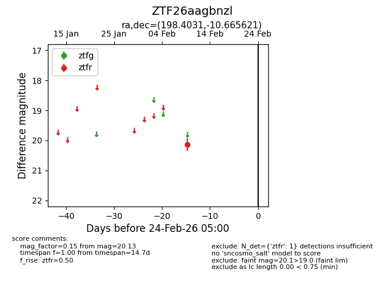
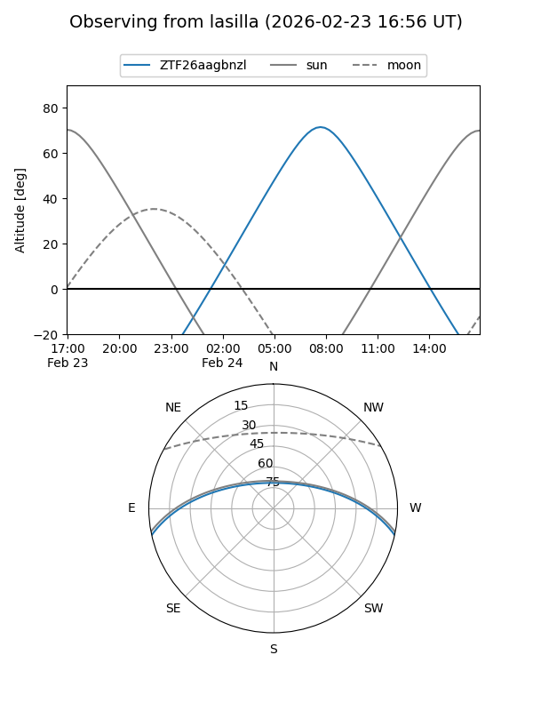
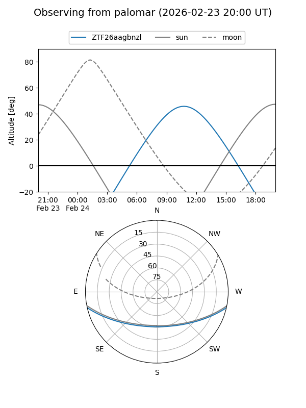

ZTF26aagbnzl
Target ZTF26aagbnzl at 2026-02-24 09:08
Aliases and brokers:
FINK: link
Lasair: link
ALeRCE: link
alt names
ZTF26aagbnzl (ztf,fink_ztf)
Coordinates:
equatorial (ra, dec) = 198.4031,-10.66562
equatorial (HMS+DMS) = 13:13:36.73,-10:39:56.24
galactic (l, b) = (311.7675,+51.82531)
Flags:
Photometry:
last ztfr=20.13
1 ztfr detections
Lightcurve

Visibility


Additional plots